This document will guide you through a few data analysis and model fitting tasks.
Below, I provide commentary and instructions, and you are expected to write all or some of the missing code to perform the steps I describe.
Note that I call the main data variable d. So if you see bits of code with that variable, it is the name of the data. You are welcome to give it different names, then just adjust the code snippets accordingly.
We need a variety of different packages, which are loaded here. Install as needed. If you use others, load them here.
##
## Attaching package: 'dplyr'## The following objects are masked from 'package:stats':
##
## filter, lag## The following objects are masked from 'package:base':
##
## intersect, setdiff, setequal, unionlibrary('forcats')
library('ggplot2')
library('corrplot') #to make a correlation plot. You can use other options/packages.## corrplot 0.84 loaded## Loading required package: lattice## Loading required package: Formula## Loading required package: plotmo## Loading required package: plotrix## Loading required package: TeachingDemos##
## Attaching package: 'reshape2'## The following object is masked from 'package:tidyr':
##
## smiths##
## Attaching package: 'miscset'## The following object is masked from 'package:dplyr':
##
## collapseWe will be exploring and fitting a dataset of norovirus outbreaks. You can look at the codebook, which briefly explains the meaning of each variable. If you are curious, you can check some previous papers that we published using (slighly different versions of) this dataset here and here.
#Write code that loads the dataset and does a quick check to make sure the data loaded ok (using e.g. `str` and `summary` or similar such functions).
data_raw <- read.csv("./norodata.csv")
str(data_raw)## 'data.frame': 1022 obs. of 139 variables:
## $ id : int 2 17 39 40 41 42 43 44 67 74 ...
## $ Author : Factor w/ 217 levels " kagawa-Okamoto",..: 3 9 16 16 16 16 16 16 25 28 ...
## $ Pub_Year : int 2005 2000 2009 2009 2009 2009 2009 2009 2009 1994 ...
## $ pubmedid : int 15841336 11071673 19205471 19205471 19205471 19205471 19205471 19205471 19440360 8202078 ...
## $ EpiCurve : Factor w/ 3 levels "","N","Y": 3 3 2 2 2 2 2 2 2 2 ...
## $ TDComment : Factor w/ 11 levels "","Just norovirus outbreak",..: 1 1 1 1 1 1 1 1 1 1 ...
## $ AHComment : Factor w/ 3 levels "","confirmed",..: 1 1 1 1 1 1 1 1 1 1 ...
## $ Trans1 : Factor w/ 6 levels "Environmental",..: 5 2 2 2 2 2 2 2 5 2 ...
## $ Trans1_O : int 0 0 0 0 0 0 0 0 0 0 ...
## $ Trans2 : Factor w/ 6 levels " (not applicable)",..: 1 5 1 1 1 1 1 1 1 1 ...
## $ Trans2_O : Factor w/ 2 levels "0","Direct contact with diarrhea or vomitus": 1 1 1 1 1 1 1 1 1 1 ...
## $ Trans3 : Factor w/ 6 levels " (not applicable)",..: 1 1 1 1 1 1 1 1 1 1 ...
## $ Trans3_O : Factor w/ 2 levels "0","smoking": 1 1 1 1 1 1 1 1 1 1 ...
## $ Risk1 : num 0 108 130 4 25 ...
## $ Risk2 : num NA NA NA NA NA NA NA NA NA NA ...
## $ RiskAll : num 0 108 130 4 25 ...
## $ Cases1 : int 15 43 27 4 15 6 40 10 116 45 ...
## $ Cases2 : int NA 22 NA NA NA NA NA NA NA NA ...
## $ CasesAll : int 15 65 27 4 15 6 40 10 116 45 ...
## $ Rate1 : num NA 39.8 20.8 100 60 ...
## $ Rate2 : num NA NA NA NA NA NA NA NA NA NA ...
## $ RateAll : num 0 39.8 20.8 100 60 ...
## $ Hospitalizations : int 0 0 0 0 0 0 0 0 5 10 ...
## $ Deaths : int 0 0 0 0 0 0 0 0 0 0 ...
## $ Vehicle_1 : Factor w/ 126 levels "0","Aerosolized vomit",..: 1 6 1 1 1 1 1 1 1 73 ...
## $ Veh1 : Factor w/ 4 levels "No","Unknown",..: 3 4 3 3 3 3 3 3 3 4 ...
## $ Veh1_D_1 : Factor w/ 163 levels "0","aerosilized",..: 1 159 1 1 1 1 1 1 1 107 ...
## $ Veh2 : Factor w/ 2 levels "No","Yes": 1 2 1 1 1 1 1 1 1 1 ...
## $ Veh2_D_1 : Factor w/ 63 levels "","0","accommodation environment on day of arrival",..: 2 21 2 2 2 2 2 2 2 2 ...
## $ Veh3 : Factor w/ 2 levels "No","Yes": 1 1 1 1 1 1 1 1 1 1 ...
## $ Veh3_D_1 : Factor w/ 19 levels "","0","Brandy S ps",..: 2 2 2 2 2 2 2 2 2 2 ...
## $ PCRSect : Factor w/ 4 levels "Both","Capsid",..: 2 3 1 1 1 1 1 1 1 4 ...
## $ OBYear : Factor w/ 23 levels "0","1983","1990",..: 11 10 19 19 19 19 19 19 17 5 ...
## $ Hemisphere : Factor w/ 3 levels "Northern","Southern",..: 1 1 1 1 1 1 1 1 1 1 ...
## $ season : Factor w/ 5 levels "","Fall","Spring",..: 2 2 2 2 2 2 2 2 2 2 ...
## $ MeanI1 : int 0 0 0 0 0 0 0 0 0 0 ...
## $ MedianI1 : int 0 37 0 0 0 0 0 0 0 31 ...
## $ Range_S_I1 : num 0 0 0 0 0 0 0 0 0 2 ...
## $ Range_L_I1 : num 0 0 0 0 0 0 0 0 0 69 ...
## $ MeanD1 : num 0 0 0 0 0 0 0 0 0 0 ...
## $ MedianD1 : num 0 36 0 0 0 0 0 0 0 48 ...
## $ Range_S_D1 : num 0 0 0 0 0 0 0 0 0 10 ...
## $ Range_L_D1 : int 0 0 0 0 0 0 0 0 0 168 ...
## $ MeanA1 : num NA NA NA NA NA NA NA NA NA NA ...
## $ MedianA1 : num NA NA NA NA NA NA NA NA NA NA ...
## $ Range_Y_A1 : Factor w/ 49 levels "<1","0","0.167",..: 8 2 2 2 2 2 2 2 2 2 ...
## $ Range_O_A1 : num 2 0 0 0 0 0 0 0 0 0 ...
## $ Action1 : Factor w/ 4 levels "No","Unknown",..: 3 3 3 3 3 3 3 3 3 4 ...
## $ Action2_1 : Factor w/ 186 levels "","\tContami ted batch withdrawn from market; Finnish authorities issued alert through Rapid Alert System for Food"| __truncated__,..: 5 5 5 5 5 5 5 5 5 108 ...
## $ Secondary : Factor w/ 3 levels "","No","Yes": 2 3 2 2 2 2 2 2 2 2 ...
## $ MeanI2 : int 0 0 0 0 0 0 0 0 0 0 ...
## $ MedianI2 : int 0 0 0 0 0 0 0 0 0 0 ...
## $ Range_S_I2 : int 0 0 0 0 0 0 0 0 0 0 ...
## $ Range_L_I2 : int 0 0 0 0 0 0 0 0 0 0 ...
## $ MeanD2 : int 0 0 0 0 0 0 0 0 0 0 ...
## $ MedianD2 : int 0 0 0 0 0 0 0 0 0 0 ...
## $ Range_S_D2 : int 0 0 0 0 0 0 0 0 0 0 ...
## $ Range_L_D2 : int 0 0 0 0 0 0 0 0 0 0 ...
## $ Mea.2 : int 0 0 0 0 0 0 0 0 0 0 ...
## $ Media.2 : int 0 0 0 0 0 0 0 0 0 0 ...
## $ Range_Y_A2 : int 0 0 0 0 0 0 0 0 0 0 ...
## $ Range_O_A2 : int 0 0 0 0 0 0 0 0 0 0 ...
## $ Comments_1 : Factor w/ 989 levels ""," turally recombi nt GII NV outbreak occurred in infant home in Sapporo, Japan where only residents who were up "| __truncated__,..: 918 938 978 979 980 981 984 982 350 853 ...
## $ Path1 : Factor w/ 4 levels "No","Unknown",..: 1 1 3 3 3 3 3 3 1 3 ...
## $ Path2_1 : Factor w/ 59 levels "","0","adenovirus",..: 2 2 2 2 2 2 2 2 2 2 ...
## $ Country : Factor w/ 22 levels "Australia","Austria",..: 12 22 17 17 17 17 17 17 17 22 ...
## $ Category : Factor w/ 12 levels "Daycare","Foodservice",..: 1 2 2 2 2 2 2 2 6 12 ...
## $ State : Factor w/ 36 levels "0","1","14 states: CA, UT, KS, WI, IL, IN, OH, GA, FL, NC, VA, WV, NY, PA,",..: 1 21 1 1 1 1 1 1 1 9 ...
## $ Setting_1 : Factor w/ 388 levels "\tPsychiatric Care Center adjoined",..: 121 32 39 310 39 352 39 310 201 3 ...
## $ StartMonth : int 11 9 9 10 11 11 11 11 11 11 ...
## $ EndMonth : int 12 9 0 0 0 0 0 0 11 11 ...
## $ GGA : int 2 1 2 0 2 0 0 0 2 0 ...
## $ CA : int 4 0 4 0 4 0 0 0 4 0 ...
## $ SA : Factor w/ 123 levels "0","100% identity w/AB05308, 96% identity w/MOH",..: 62 115 34 1 35 1 1 1 122 1 ...
## $ new_GGA : int 0 0 0 0 0 0 0 0 0 0 ...
## $ new_CA : int 0 0 0 0 0 0 0 0 0 0 ...
## $ new_SA : Factor w/ 27 levels "0","ARG320-USA",..: 1 1 1 1 1 1 1 1 1 1 ...
## $ SA_resolved_from : Factor w/ 9 levels "","abstraction",..: 1 1 1 1 1 1 1 1 1 1 ...
## $ GGB : int 0 0 0 0 0 0 0 0 0 0 ...
## $ CB : Factor w/ 18 levels "0","1","10","12",..: 1 1 1 1 1 1 1 1 1 1 ...
## $ SB : Factor w/ 38 levels "0","93.7% homology w/Saitama",..: 1 1 1 1 1 1 1 1 1 1 ...
## $ new_GGB : int 0 0 0 0 0 0 0 0 0 0 ...
## $ new_CB : int 0 0 0 0 0 0 0 0 0 0 ...
## $ new_SB : Factor w/ 14 levels "0","Birmingham",..: 1 1 1 1 1 1 1 1 1 1 ...
## $ SB_resolved_from : Factor w/ 6 levels "","abstraction",..: 1 1 1 1 1 1 1 1 1 1 ...
## $ GGC : int 0 0 0 0 0 0 0 0 0 0 ...
## $ CC : int 0 0 0 0 0 0 0 0 0 0 ...
## $ SC : Factor w/ 25 levels "0","95% homology with Sundsvall",..: 1 1 1 1 1 1 1 1 1 1 ...
## $ new_ggc : int 0 0 0 0 0 0 0 0 0 0 ...
## $ new_cc : int 0 0 0 0 0 0 0 0 0 0 ...
## $ new_sc : Factor w/ 5 levels "0","Fayetteville",..: 1 1 1 1 1 1 1 1 1 1 ...
## $ SC_resolved_from : Factor w/ 4 levels "","abstraction",..: 1 1 1 1 1 1 1 1 1 1 ...
## $ GGD : int 0 0 0 0 0 0 0 0 0 0 ...
## $ CD : Factor w/ 13 levels "0","1","12","14",..: 1 1 1 1 1 1 1 1 1 1 ...
## $ SD : Factor w/ 8 levels "0","Amsterdam",..: 1 1 1 1 1 1 1 1 1 1 ...
## $ new_ggd : int 0 0 0 0 0 0 0 0 0 0 ...
## $ new_cd : int 0 0 0 0 0 0 0 0 0 0 ...
## $ new_sd : int 0 0 0 0 0 0 0 0 0 0 ...
## $ SD_resolved_from : logi NA NA NA NA NA NA ...
## [list output truncated]Let’s assume that our main outcome of interest is the fraction of individuals that become infected in a given outbreak. The data reports that outcome (called RateAll), but we’ll also compute it ourselves so that we can practice creating new variables. To do so, take a look at the data (maybe peek at the Codebook) and decide which of the existing variables you should use to compute the new one. This new outcome variable will be added to the data frame.
RateAll is defined in the codebook to be "Attack rate (i.e. (secondary cases + primary cases/persons at risk)100) from outbreak" But to match the values given in RateAll we use (Cases1/RiskAll)100
# Use the `mutate()` function from the `dplyr` package to create a new column with this value. Call the new variable `fracinf`.
d <- data_raw %>% dplyr::mutate(fracinf = ((CasesAll)/RiskAll)*100)
#d$fracinf[d$fracinf == Inf] <- 0 #Need to change Inf data points
#d$fracinf[!(d$fracinf %in% d$RateAll)]
#ab <- data.frame(d$fracinf,d$RateAll)
#ab$d.fracinf[!(ab$a %in% ab$b)]
all(d$fracinf == d$RateAll)## [1] FALSENote the notation dplyr:: in front of mutate. This is not strictly necessary, but it helps in 2 ways. First, this tells the reader explicitly from which package the function comes. This is useful for quickly looking at the help file of the function, or if we want to adjust which packages are loaded/used. It also avoids occasional confusion if a function exists more than once (e.g. filter exists both in the stats and dplyr package). If the package is not specified, R takes the function from the package that was loaded last. This can sometimes produce strange error messages. I thus often (but not always) write the package name in front of the function.
As you see in the Rmd file, the previous text box is created by placing texts between the ::: symbols and specifying some name. This allows you to apply your own styling to specific parts of the text. You define your style in a css file (here called customstyles.css), and you need to list that file in the _site.yml file. The latter file also lets you change the overall theme. You can choose from the library of free Bootswatch themes.
Use both text summaries and plots to take a look at the new variable you created to see if everything looks ok or if we need further cleaning.
#Write code that takes a look at the values of the `fracinf` variable you created. Look at both text summaries and a figure.
head(d$RateAll)## [1] 0.00000 39.81481 20.76923 100.00000 60.00000 75.00000## [1] Inf 60.18519 20.76923 100.00000 60.00000 75.00000## `stat_bin()` using `bins = 30`. Pick better value with `binwidth`.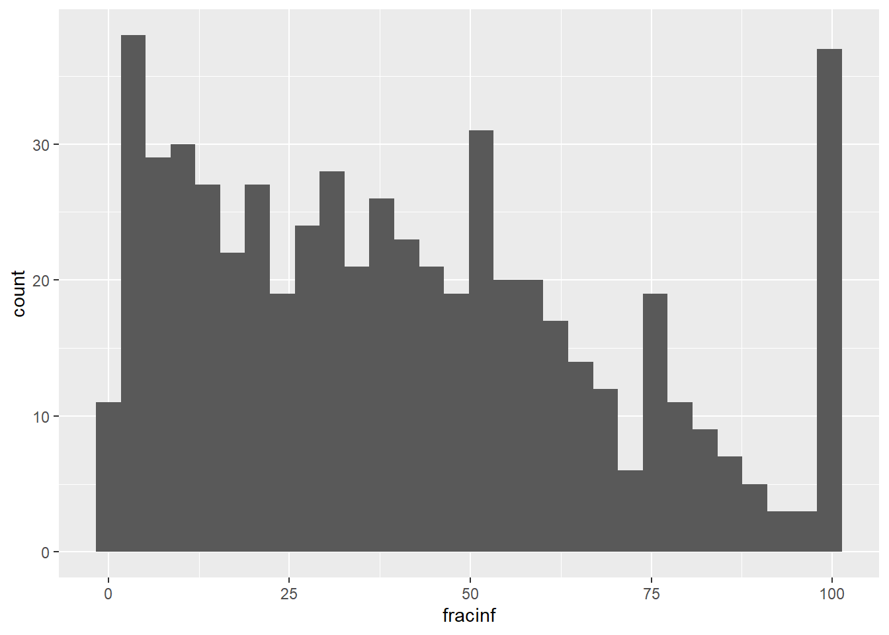 The Inf values comes from dividing by zero which have been translated to be 0 in the RateAll variable
We notice there are NAs in this variable and the distribution is not normal. The latter is somewhat expected since our variable is a proportion, so it has to be between 0 and 1. There are also a lot of infinite values. Understand where they come from.
Let’s take a look at the RateAll variable recorded in the dataset and compare it to ours. First, create a plot that lets you quickly see if/how the variables differ.
# Plot one variable on the x axis, the other on the y axis
# also plot the difference of the 2 variables
# make sure you adjust so both are in the same units
d %>%
ggplot(aes(x=RateAll, y=fracinf)) +
geom_point()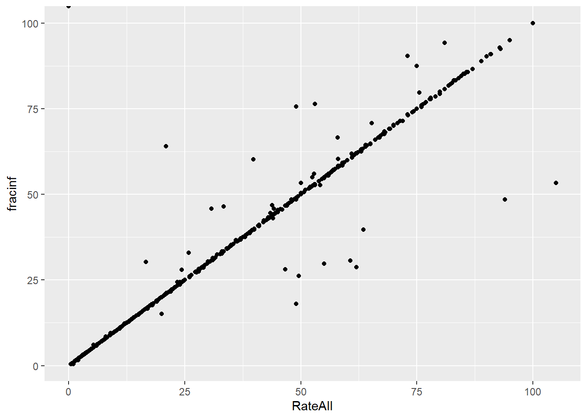
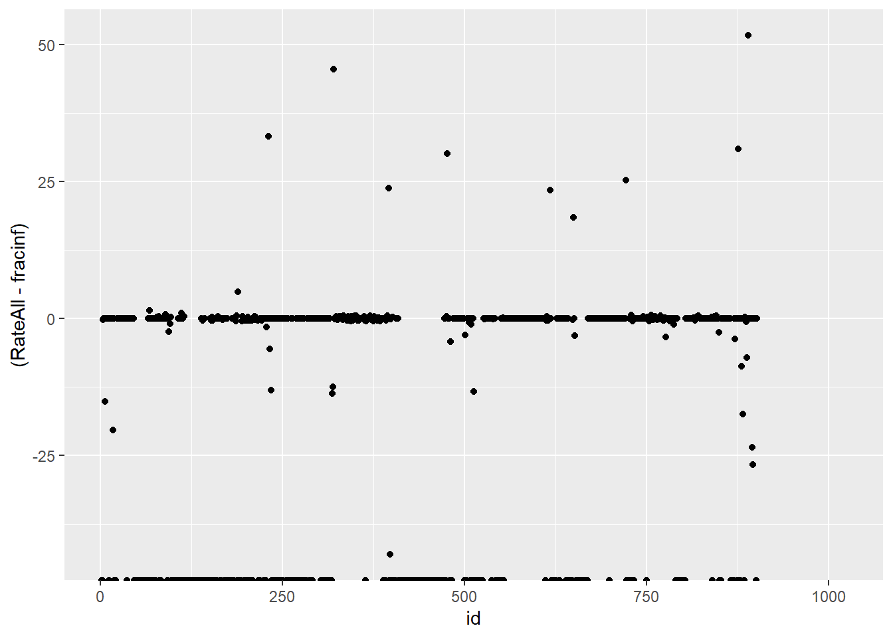 Looking at the text numbers we noticed that not all match, there are also a lot of NA. Looking at the plot we expect a perfectly strightline however we have some erroneous points, showing something went wrong in those rows
Ideally all differences would fall on 0, they do not
Both ways of plotting the data show that for most outbreaks, the two ways of getting the outcome agree. So that’s good. But we need to look closer and resolve the problem with infinite values above. Check to see what the RateAll variable has for those infinite values.
#Write code that looks at the values of RateAll where we have inifinite values
ind <- which(is.infinite(d$fracinf))
d$RateAll[ind]## [1] 0 0 0 0 0 0 0 0 0 0 0 0 0 0 0 0 0 0 0 0 0 0 0 0 0 0 0 0 0 0 0 0 0 0 0
## [36] 0 0 0 0 0 0 0 0 0 0 0 0 0 0 0 0 0 0 0 0 0 0 0 0 0 0 0 0 0 0 0 0 0 0 0
## [71] 0 0 0 0 0 0 0 0 0 0 0 0 0 0 0 0 0 0 0 0 0 0 0 0 0 0 0 0 0 0 0 0 0 0 0
## [106] 0 0 0 0 0 0 0 0 0 0 0 0 0 0 0 0 0 0 0 0 0 0 0 0 0 0 0 0 0 0 0 0 0 0 0
## [141] 0 0 0 0 0 0 0 0 0 0 0 0 0 0 0 0 0 0 0 0 0 0 0 0 0 0 0 0 0 0 0 0 0 0 0
## [176] 0 0 0 0 0 0 0 0 0 0 0 0 0 0 0 0 0 0 0 0 0 0 0 0 0 0 0 0 0 0 0 0 0 0 0
## [211] 0 0 0 0 0 0 0 0 0 0 0 0 0 0 0 0 0 0 0 0 0 0 0 0 0 0 0 0 0 0 0 0 0 0 0
## [246] 0 0 0 0 0 0 0 0 0 0 0 0 0 0 0 0 0 0 0 0 0 0 0 0 0 0 0 0 0 0 0 0 0 0 0
## [281] 0 0 0 0 0 0 0 0 0 0 0 0 0 0 0 0 0 0 0 0 0 0 0 0 0 0 0 0 0 0 0 0 0 0 0
## [316] 0 0 0 0 0 0 0 0## [1] 0 0 0 0 0 0 0 0 0 0 0 0 0 0 0 0 0 0 0 0 0 0 0 0 0 0 0 0 0 0 0 0 0 0 0
## [36] 0 0 0 0 0 0 0 0 0 0 0 0 0 0 0 0 0 0 0 0 0 0 0 0 0 0 0 0 0 0 0 0 0 0 0
## [71] 0 0 0 0 0 0 0 0 0 0 0 0 0 0 0 0 0 0 0 0 0 0 0 0 0 0 0 0 0 0 0 0 0 0 0
## [106] 0 0 0 0 0 0 0 0 0 0 0 0 0 0 0 0 0 0 0 0 0 0 0 0 0 0 0 0 0 0 0 0 0 0 0
## [141] 0 0 0 0 0 0 0 0 0 0 0 0 0 0 0 0 0 0 0 0 0 0 0 0 0 0 0 0 0 0 0 0 0 0 0
## [176] 0 0 0 0 0 0 0 0 0 0 0 0 0 0 0 0 0 0 0 0 0 0 0 0 0 0 0 0 0 0 0 0 0 0 0
## [211] 0 0 0 0 0 0 0 0 0 0 0 0 0 0 0 0 0 0 0 0 0 0 0 0 0 0 0 0 0 0 0 0 0 0 0
## [246] 0 0 0 0 0 0 0 0 0 0 0 0 0 0 0 0 0 0 0 0 0 0 0 0 0 0 0 0 0 0 0 0 0 0 0
## [281] 0 0 0 0 0 0 0 0 0 0 0 0 0 0 0 0 0 0 0 0 0 0 0 0 0 0 0 0 0 0 0 0 0 0 0
## [316] 0 0 0 0 0 0 0 0You should find that all of the reported values are 0. So what makes more sense? You should have figured out that the infinite values in our computed variables arise because the RiskAll variable is 0. That variable contains the total number of persons at risk for an outbreak. If nobody is at risk of getting infected, of course, we can’t get any infected. So RateAll being 0 is technically correct. But does it make sense to include “outbreaks” in our analysis where nobody is at risk of getting infected? One should question how those got into the spreadsheet in the first place.
Having to deal with “weirdness” in your data like this example is common. You often need to make a decision based on best judgment.
Here, I think that if nobody is at risk, we shouldn’t include those outbreaks in further analysis. Thus, we’ll go with our computed outcome and remove all observations that have missing or infinite values for the outcome of interest, since those can’t be used for model fitting. Thus, we go ahead and remove any observations that have un-useable values in the outcome.
#Write code that removes all observations that have an outcome that is not very useful, i.e. either NA or infinity. Then look at the outcome variable again to make sure things are fixed. Also check the size of the new dataset to see by how much it shrunk.
dremove <- d[(is.finite(d$fracinf)),]
print(dremove$fracinf) ## [1] 60.1851852 20.7692308 100.0000000 60.0000000 75.0000000
## [6] 83.3333333 83.3333333 52.7272727 63.0000000 37.5245580
## [11] 52.7777778 12.6153846 3.4239415 38.4375000 4.8708333
## [16] 60.3773585 43.0000000 34.2105263 53.8461538 32.5925926
## [21] 50.4424779 31.3253012 32.7586207 45.7774799 70.8333333
## [26] 7.7222222 62.2641509 30.3291536 69.2307692 52.1739130
## [31] 50.0000000 60.0000000 48.5436893 14.8437500 95.0000000
## [36] 51.3513514 37.5000000 39.6907216 8.8430361 34.3750000
## [41] 15.1515152 76.0000000 64.0000000 31.2500000 94.2857143
## [46] 39.3364929 4.1666667 3.8461538 2.9411765 75.6756757
## [51] 27.8941566 34.1463415 7.1895425 17.6470588 70.2702703
## [56] 28.1690141 17.8571429 66.6666667 39.5348837 37.5000000
## [61] 36.3636364 15.6666667 50.0000000 76.7123288 21.6363636
## [66] 10.2857143 36.3128492 12.6153846 9.8214286 9.4445935
## [71] 9.6287531 1.2748151 12.8654971 50.0000000 16.6666667
## [76] 71.5000000 18.7221397 34.2592593 30.4225352 16.7931281
## [81] 23.6811927 9.0702087 11.6597725 2.5242718 11.1111111
## [86] 11.2676056 24.0740741 21.5384615 28.0373832 18.0327869
## [91] 50.0000000 66.6666667 50.0000000 39.7590361 36.6197183
## [96] 11.4352392 14.1274238 10.7692308 10.0000000 3.0303030
## [101] 88.8888889 9.8182884 85.7142857 82.6086957 11.5384615
## [106] 39.2405063 48.6486486 79.3103448 57.8947368 50.0000000
## [111] 28.1347962 6.0856865 56.6371681 37.6621565 10.0000000
## [116] 37.2137405 51.7857143 59.1836735 52.2556391 15.1515152
## [121] 33.3333333 40.6779661 78.2608696 60.0000000 49.0000000
## [126] 100.0000000 75.0000000 19.6428571 69.2307692 56.0000000
## [131] 61.5384615 50.0000000 75.0000000 100.0000000 100.0000000
## [136] 48.3333333 56.3380282 28.6725664 42.8571429 40.8291457
## [141] 40.9090909 80.0000000 48.4974775 74.0740741 100.0000000
## [146] 17.6470588 41.1764706 58.3333333 28.3018868 25.0000000
## [151] 62.5000000 100.0000000 100.0000000 25.0000000 66.6666667
## [156] 35.2941176 42.4242424 34.2105263 100.0000000 63.1578947
## [161] 90.9090909 24.4604317 31.3915858 46.8599034 54.7619048
## [166] 42.0000000 13.3333333 36.2500000 50.0000000 63.3333333
## [171] 71.4285714 44.4444444 81.8181818 76.3157895 41.8918919
## [176] 63.0000000 6.2666667 64.8936170 16.0000000 22.2222222
## [181] 2.1739130 12.5000000 5.5555556 3.1250000 64.2857143
## [186] 52.9411765 24.4755245 10.9601449 47.2222222 49.0272374
## [191] 74.3243243 40.0000000 55.5555556 42.5531915 25.0000000
## [196] 43.5483871 22.0000000 50.0000000 55.4770318 28.8135593
## [201] 51.6853933 24.8470012 32.7272727 100.0000000 18.8888889
## [206] 100.0000000 58.4000000 82.2222222 70.8333333 38.8888889
## [211] 30.0000000 16.7741935 28.4000000 24.4791667 39.0804598
## [216] 0.5055977 30.8823529 0.7537688 22.9437229 32.9113924
## [221] 3.7000000 23.8649593 70.0000000 38.0952381 24.5000000
## [226] 25.0000000 3.3000000 95.0000000 44.5255474 100.0000000
## [231] 13.6363636 76.9230769 100.0000000 20.0000000 16.6666667
## [236] 10.4249142 67.1428571 4.5454545 55.0000000 84.0000000
## [241] 33.0000000 7.2444444 80.0000000 40.0000000 28.7305122
## [246] 55.5555556 48.4848485 6.0606061 54.9450549 30.6149733
## [251] 28.8888889 33.3333333 60.0000000 92.8571429 80.0000000
## [256] 6.0000000 16.8181818 14.9171271 26.4150943 33.0000000
## [261] 50.0000000 19.9376947 27.3333333 3.4075295 24.2424242
## [266] 18.1818182 38.4615385 83.3333333 24.6153846 31.2500000
## [271] 26.4150943 5.7857143 9.4444444 35.0364964 73.0769231
## [276] 56.6037736 20.8805031 10.0000000 1.8625127 10.4249142
## [281] 47.8260870 30.3571429 10.0000000 30.9523810 27.5000000
## [286] 55.0000000 53.3742331 44.2231076 43.2098765 45.7777778
## [291] 40.0000000 50.0000000 52.3809524 77.7777778 100.0000000
## [296] 75.0000000 21.1111111 22.6683938 48.1481481 52.9411765
## [301] 28.0423280 61.9200000 38.7218045 20.8545495 27.1764706
## [306] 58.3333333 85.2941176 80.7692308 43.3333333 6.5604499
## [311] 68.1818182 13.3000000 20.0000000 20.0000000 68.4210526
## [316] 75.5555556 45.5696203 85.7142857 57.1428571 64.7058824
## [321] 83.3333333 64.4067797 60.0000000 42.8571429 44.1558442
## [326] 90.3225806 75.0000000 51.3513514 12.1661721 46.4285714
## [331] 61.1111111 100.0000000 50.0000000 66.6666667 40.0000000
## [336] 62.9629630 75.0000000 100.0000000 31.5789474 34.8101266
## [341] 43.1578947 70.0000000 36.3636364 100.0000000 59.3750000
## [346] 100.0000000 54.5454545 100.0000000 39.4636015 50.7109005
## [351] 17.9389313 100.0000000 90.9090909 47.5000000 52.9411765
## [356] 59.3750000 16.6666667 87.5000000 52.5925926 75.0000000
## [361] 66.6666667 77.7777778 78.5714286 38.8888889 44.8275862
## [366] 100.0000000 40.0000000 70.0000000 37.2093023 46.6666667
## [371] 100.0000000 100.0000000 32.4324324 86.6666667 100.0000000
## [376] 73.3333333 55.5555556 60.7142857 48.8888889 33.3333333
## [381] 52.1739130 36.3636364 40.0000000 100.0000000 25.8064516
## [386] 12.2448980 95.0000000 28.5714286 100.0000000 100.0000000
## [391] 51.9230769 42.0000000 2.7914286 18.1855333 58.3941606
## [396] 7.0652174 64.0232108 61.9718310 62.6506024 85.2941176
## [401] 79.7872340 8.0000000 40.0000000 13.6363636 84.6153846
## [406] 46.8227425 57.3770492 44.5054945 30.0000000 44.8051948
## [411] 45.6521739 14.0495868 30.1204819 6.0606061 13.0620985
## [416] 1.5584416 28.5714286 8.2644628 2.1052632 8.9743590
## [421] 3.5294118 4.8780488 1.3793103 2.6315789 1.2765957
## [426] 2.5641026 61.1111111 3.5714286 13.5593220 7.3170732
## [431] 19.0476190 16.6666667 19.5121951 30.9523810 2.7272727
## [436] 3.2051282 3.8461538 1.6216216 3.0864198 35.4838710
## [441] 2.5316456 2.2222222 4.3478261 13.8461538 29.3577982
## [446] 5.5555556 2.3529412 11.7647059 2.7027027 3.6363636
## [451] 5.9405941 13.8461538 7.0588235 7.0588235 3.7878788
## [456] 9.0909091 3.9473684 6.1224490 19.5121951 36.3247863
## [461] 30.3418803 36.5384615 26.2357414 66.6666667 33.3333333
## [466] 56.1728395 56.0000000 80.0000000 100.0000000 80.0000000
## [471] 100.0000000 100.0000000 26.1016949 76.9230769 100.0000000
## [476] 100.0000000 100.0000000 40.0000000 7.8549849 100.0000000
## [481] 100.0000000 100.0000000 100.0000000 60.0000000 20.0000000
## [486] 55.5555556 31.0344828 62.0689655 43.2835821 31.3559322
## [491] 27.4509804 16.3763066 29.7157623 12.5000000 44.4444444
## [496] 46.6666667 67.6470588 56.8000000 22.8571429 11.5793331
## [501] 4.1555116 1.7077799 43.8596491 40.0000000 12.1495327
## [506] 49.4145199 20.3956344 30.0000000 20.8333333 21.0526316
## [511] 6.2937063 22.4137931 20.0000000 7.6923077 0.4074074
## [516] 20.6896552 12.9870130 12.5000000 19.3548387 9.6153846
## [521] 7.5000000 17.7419355 20.0000000 4.9180328 23.4375000
## [526] 11.6531165 31.0185185 67.6470588 90.4761905 14.6131805
## [531] 11.1111111 21.9000000 8.9000000 17.5000000 76.4705882
## [536] 75.6097561 12.3926380 33.3333333 22.2222222 5.3495763
## [541] 7.7657935 5.6394763 56.0975610 57.1428571 29.7872340
## [546] 64.1791045 38.4615385 10.7142857 4.0154440 36.7469880
## [551] 8.4611578 8.1889324 3.0435500 0.3994807 3.0672079
## [556] 30.1762115 1.6380016 27.8571429 50.0000000 21.2328767
## [561] 31.1111111 100.0000000 57.1428571 92.5373134 30.7692308
## [566] 35.0000000 26.1224490 33.3333333 58.3333333 66.0000000
## [571] 48.8888889 53.3333333 44.0000000 17.0000000 70.0000000
## [576] 50.0000000 45.4545455 76.0000000 15.3946510You should find that we lost a lot of data, we are down to 579 observations (from a starting 1022). That would be troublesome for most studies if that would mean subjects drop out (that could lead to bias). Here it’s maybe less problematic since each observation is an outbreak collected from the literature. Still, dropping this many could lead to bias if all the ones that had NA or Infinity were somehow systematically different. It would be useful to look into and discuss in a real analysis.
Not uncommon for real datasets, this one has a lot of variables. Many are not too meaningful for modeling. Our question is what predicts the fraction of those that get infected, i.e., the new outcome we just created. We should first narrow down the predictor variables of interest based on scientific grounds.
For this analysis exercise, we just pick the following variables for further analysis: Action1, CasesAll, Category, Country, Deaths, GG2C4, Hemisphere, Hospitalizations, MeanA1, MeanD1, MeanI1, MedianA1, MedianD1, MedianI1, OBYear, Path1, RiskAll, Season, Setting, Trans1, Vomit. Of course, we also need to keep our outcome of interest.
Note that - as often happens for real data - there are inconsistencies between the codebook and the actual datasheet. Here, names of variables and spelling in the codebook do not fully agree with the data. The above list of variables is based on codebook, and you need to make sure you get the right names from the data when selecting those variables.
#write code to select the specified variables
varint <- c('Action1', 'CasesAll', 'Category', 'Country', 'Deaths', 'GG2C4', 'Hemisphere',
'Hospitalizations', 'MeanA1', 'MeanD1', 'MeanI1', 'MedianA1', 'MedianD1',
'MedianI1', 'OBYear', 'Path1', 'RiskAll', 'Season', 'Setting', 'Trans1', 'Vomit')
##Which of the list above is not in the data set
varint[which(!(varint %in% colnames(dremove)))]## [1] "GG2C4" "Season" "Setting"##Replacing those with the name that is in the dataset, and adding variable of interest
varint <- c('Action1', 'CasesAll', 'Category', 'Country', 'Deaths', 'gg2c4', 'Hemisphere',
'Hospitalizations', 'MeanA1', 'MeanD1', 'MeanI1', 'MedianA1', 'MedianD1',
'MedianI1', 'OBYear', 'Path1', 'RiskAll', 'season', 'Setting_1', 'Trans1', 'Vomit',
'fracinf')
varint[which(!(varint %in% colnames(dremove)))]## character(0)#Subsetting the data
drsub <- dremove[varint]
#Checking the number of columns is 22
length(colnames(drsub))## [1] 22Your reduced dataset should contain 579 observations and 22 variables.
With this reduced dataset, we’ll likely still need to perform further cleaning. We can start by looking at missing data. While the summary function gives that information, it is somewhat tedious to pull out. We can just focus on NA for each variable and look at the text output, or for lots of predictors, a graphical view is easier to understand. The latter has the advantage of showing potential clustering of missing values.
# this code prints number of missing for each variable (assuming your dataframe is called d)
print(colSums(is.na(drsub))) ## Action1 CasesAll Category Country
## 0 0 0 0
## Deaths gg2c4 Hemisphere Hospitalizations
## 25 0 0 25
## MeanA1 MeanD1 MeanI1 MedianA1
## 553 0 0 541
## MedianD1 MedianI1 OBYear Path1
## 0 0 0 0
## RiskAll season Setting_1 Trans1
## 0 0 0 0
## Vomit fracinf
## 1 0# write code to use the visdat R package, add code that plots a heatmap of missing values
vis_miss(drsub)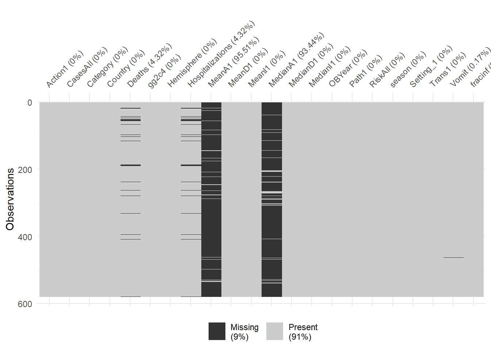
It looks like we have a lot of missing data for the MeanA1 and MedianA1 variables. If we wanted to keep those variables, we would be left with very few observations. So let’s drop those two variables. After that, we will drop all observations that have missing data (seems to be Hospitalization and Deaths).
# write code to remove the 2 "A1" variables, then drop all remaining observations with NA
drsub <- subset(drsub, select=-c(MeanA1,MedianA1))
drsfinite <- na.omit(drsub)Let’s now check the format of each variable. Depending on how you loaded the data, some variables might not be in the right format. Make sure everything that should be numeric is numeric/integer, everything that should be a factor is a factor. There should be no variable coded as character. Once all variables have the right format, take a look at the data again.
## $Action1
## [1] "factor"
##
## $CasesAll
## [1] "integer"
##
## $Category
## [1] "factor"
##
## $Country
## [1] "factor"
##
## $Deaths
## [1] "integer"
##
## $gg2c4
## [1] "factor"
##
## $Hemisphere
## [1] "factor"
##
## $Hospitalizations
## [1] "integer"
##
## $MeanD1
## [1] "numeric"
##
## $MeanI1
## [1] "integer"
##
## $MedianD1
## [1] "numeric"
##
## $MedianI1
## [1] "integer"
##
## $OBYear
## [1] "factor"
##
## $Path1
## [1] "factor"
##
## $RiskAll
## [1] "numeric"
##
## $season
## [1] "factor"
##
## $Setting_1
## [1] "factor"
##
## $Trans1
## [1] "factor"
##
## $Vomit
## [1] "integer"
##
## $fracinf
## [1] "numeric"Take another look at the data. You should find that for the dataset, most things look reasonable, but the variable Setting_1 has a lot of different levels/values. That many categories, most with only a single entry, will likely not be meaningful for modeling. One option is to drop the variable. But assume we think it’s an important variable to include and we are especially interested in the difference between restaurant settings and other settings. We could then create a new variable that has only two levels, Restaurant and Other.
#write code that creates a new variable called `Setting` based on `Setting_1` but with only 2 levels, `Restaurant` and `Other`. Then remove the `Setting_1` variable. Note that restaurant is sometimes capitalized and sometimes not. You need to fix that first. For these lines of code, the 'Factor' chapter in R4DS might be helpful here.
setlvl <- levels(drsfinite$Setting_1)
restlist <- grep("Restaurant", drsfinite$Setting_1, ignore.case = TRUE, value=TRUE)
otherlist <- grep("Restaurant", drsfinite$Setting_1, ignore.case = TRUE, value=TRUE,
invert=TRUE)
drsfsetting <- drsfinite %>%
mutate(
Setting =
fct_collapse(Setting_1,
Restaurant = restlist,
Other = otherlist)
)Next, let’s create a few plots showing the outcome and the predictors.
#write code that produces plots showing our outcome of interest on the y-axis and each numeric predictor on the x-axis.
#you can use the facet_wrap functionality in ggplot for it, or do it some other way.
drsfsetting %>% select_if(is.numeric)->exds
exds.m = reshape2::melt(exds, id.var="fracinf")
exds.m %>%
ggplot(.,aes(x=value, y=fracinf)) +
geom_line() +
facet_wrap(exds.m$variable)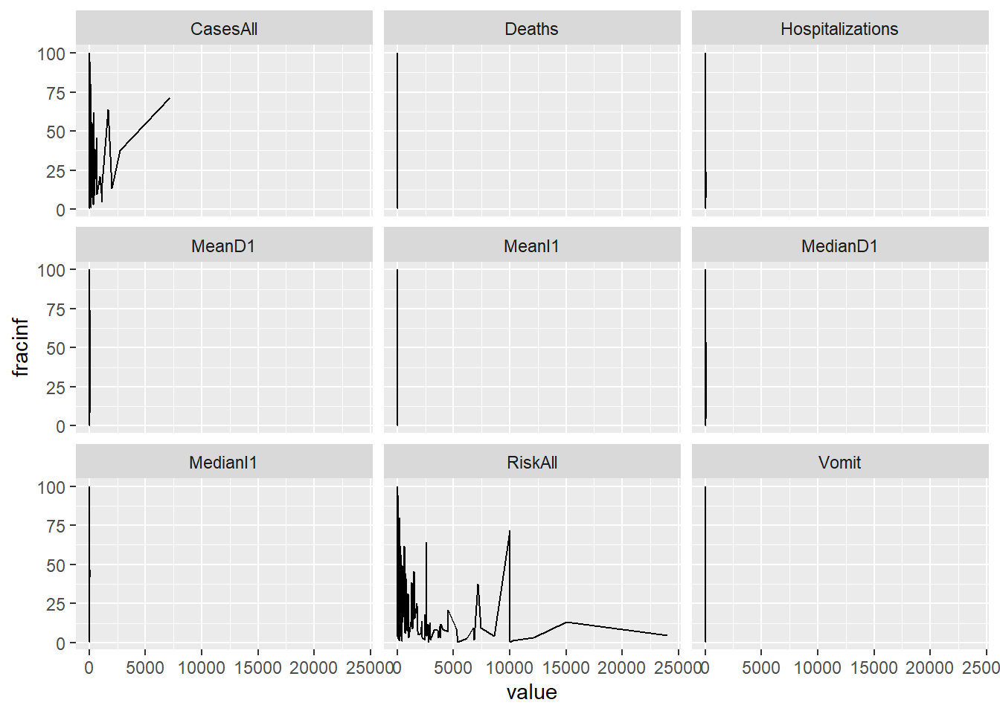
One thing I notice in the plots is that there are lots of zeros for many predictors and things look skewed. That’s ok, but means we should probably standardize these predictors. One strange finding (that I could have caught further up when printing the numeric summaries, but didn’t) is that there is (at least) one outbreak that has outbreak year reported as 0. That is, of course, wrong and needs to be fixed. There are different ways of fixing it, the best, of course, would be to trace it back and try to fix it with the right value. We won’t do that here. Instead, we’ll remove that observation.
# write code that figures out which observation(s) have 0 years and remove those from the dataset.
# do some quick check to make sure OByear values are all reasonable now
which(drsfsetting$OBYear == 0)## [1] 219drsf0 <- drsfsetting[-219,]
drsf0 %>% select_if(is.numeric)->num0
num0.m = reshape2::melt(num0, id.var="fracinf")Another useful check is to see if there are strong correlations between some of the numeric predictors. That might indicate collinearity, and some models can’t handle that very well. In such cases, one might want to remove a predictor. We’ll create a correlation plot of the numeric variables to inspect this.
# using e.g. the corrplot package (or any other you like), create a correlation plot of the numeric variables
M <- cor(num0)
corrplot(M, method="number")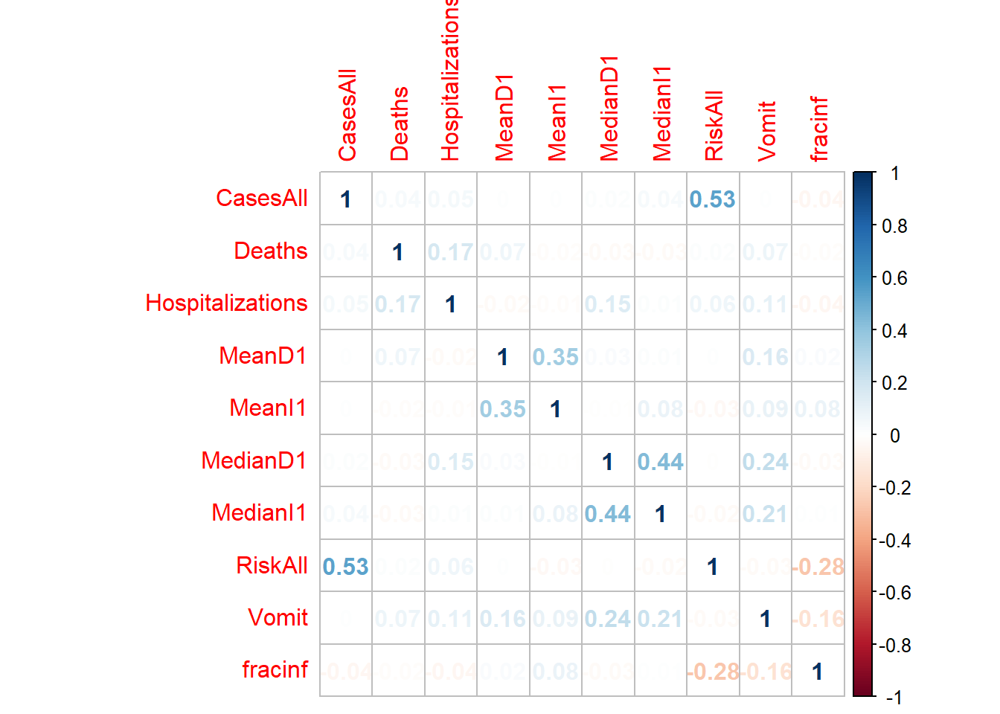
It doesn’t look like there are any very strong correlations between continuous variables, so we can keep them all for now.
Next, let’s create plots for the categorical variables, again our main outcome of interest on the y-axis.
#write code that produces plots showing our outcome of interest on the y-axis and each categorical predictor on the x-axis.
#you can use the facet_wrap functionality in ggplot for it, or do it some other way.
drsf0 %>% select_if(is.factor)->cat0
drsf0['fracinf'] -> cat0['fracinf']
cat0.m = reshape2::melt(cat0, id.var="fracinf")
ggplot(cat0.m)+
geom_dotplot(aes(x = value, fill = fracinf))+
facet_wrap(~variable)## `stat_bindot()` using `bins = 30`. Pick better value with `binwidth`.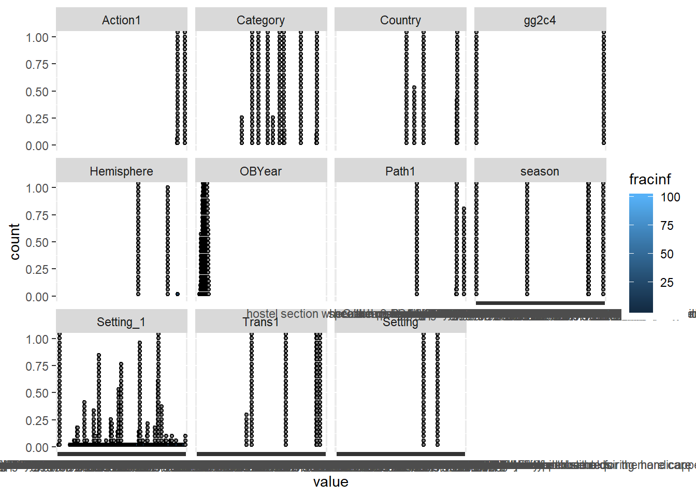
ggplotGrid(ncol = 4,
lapply(c("Action1","Category","Country","gg2c4","Hemisphere","OBYear","Path1",
"season","Setting_1","Trans1","Setting"),
function(col) {
ggplot(drsf0, aes_string(col)) + geom_bar() + coord_flip()
}))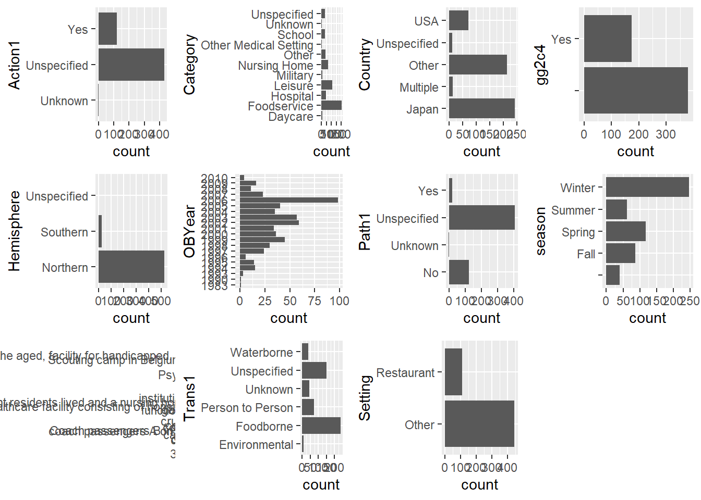
The plots do not look pretty, which is ok for exploratory. We can see that a few variables have categories with very few values (again, something we could have also seen using summary, but graphically it is usually easier to see). This will likely produce problems when we fit using cross-validation, so we should fix that. Options we have:
Setting variable.Let’s use a mix of these approaches. We’ll drop the Category variable, we’ll remove the observation(s) with Unspecified in the Hemisphere variable, and we’ll combine Unknown with Unspecified for Action1 and Path1 variables.
# write code that implements the cleaning steps described above.
# then check again (e.g. with a plot) to make sure things worked
#Drop category
drsf1 <- drsfsetting[,-3]
#Remove observations with "Unspecified" in Hemisphere
drsf1 <- drsf1[!grepl("Unspecified", drsf1$Hemisphere),]
drsf1$Hemisphere <- factor(drsf1$Hemisphere)
#Combine "Unknown" with "Unspecified" for Action1 and Path1
levels(drsf1$Action1)## [1] "No" "Unknown" "Unspecified" "Yes"drsf2 <- drsf1 %>%
mutate(
Action1 =
fct_collapse(Action1,
Unspecified = c("Unspecified","Unknown"),
No = "No",
Yes = "Yes"))
levels(drsf2$Path1)## [1] "No" "Unknown" "Unspecified" "Yes"drsf2 <- drsf2 %>%
mutate(
Path1 =
fct_collapse(Path1,
Unspecified = c("Unspecified","Unknown"),
No = "No",
Yes = "Yes"))At this step, you should have a dataframe containing 551 observations, and 19 variables: 1 outcome, 9 numeric/integer predictors, and 9 factor variables. There should be no missing values. Nope, have to find out what didn’t transfer
## [1] 219## [1] "Action1" "CasesAll" "Country"
## [4] "Deaths" "gg2c4" "Hemisphere"
## [7] "Hospitalizations" "MeanD1" "MeanI1"
## [10] "MedianD1" "MedianI1" "OBYear"
## [13] "Path1" "RiskAll" "season"
## [16] "Setting_1" "Trans1" "Vomit"
## [19] "fracinf" "Setting"## [1] 16## $Action1
## [1] "factor"
##
## $CasesAll
## [1] "integer"
##
## $Country
## [1] "factor"
##
## $Deaths
## [1] "integer"
##
## $gg2c4
## [1] "factor"
##
## $Hemisphere
## [1] "factor"
##
## $Hospitalizations
## [1] "integer"
##
## $MeanD1
## [1] "numeric"
##
## $MeanI1
## [1] "integer"
##
## $MedianD1
## [1] "numeric"
##
## $MedianI1
## [1] "integer"
##
## $OBYear
## [1] "factor"
##
## $Path1
## [1] "factor"
##
## $RiskAll
## [1] "numeric"
##
## $season
## [1] "factor"
##
## $Trans1
## [1] "factor"
##
## $Vomit
## [1] "integer"
##
## $fracinf
## [1] "numeric"
##
## $Setting
## [1] "factor"Now I have 551 observations, and 19 variables
We can finally embark on some modeling - or at least we can get ready to do so.
We will use a lot of the caret package functionality for the following tasks. You might find the package website useful as you try to figure things out.
Depending on the data and question, we might want to reserve some of the data for a final validation/testing step or not. Here, to illustrate this process and the idea of reserving some data for the very end, we’ll split things into a train and test set. All the modeling will be done with the train set, and final evaluation of the model(s) happens on the test set. We use the caret package for this.
#this code does the data splitting. I still assume that your data is stored in the `d` object.
#uncomment to run
set.seed(123)
trainset <- caret::createDataPartition(y = drsf3$fracinf, p = 0.7, list = FALSE)
data_train = drsf3[trainset,] #extract observations/rows for training, assign to new variable
data_test = drsf3[-trainset,] #do the same for the test setSince the above code involves drawing samples, and we want to do that reproducible, we also set a random number seed with set.seed(). With that, each time we perform this sampling, it will be the same, unless we change the seed. If nothing about the code changes, setting the seed once at the beginning is enough. If you want to be extra sure, it is a good idea to set the seed at the beginning of every code chunk that involves random numbers (i.e., sampling or some other stochastic/random procedure). We do that here.
Now let’s begin with the model fitting. We’ll start by looking at a null model, which is just the mean of the data. This is, of course, a stupid “model” but provides some baseline for performance.
#write code that computes the RMSE for a null model, which is just the mean of the outcome
#remember that from now on until the end, everything happens with the training data
lm_fit <- train(fracinf ~ .,
data = data_train,
method = "lm")
fc_pred <- predict(lm_fit, data_train)
lm_fit## Linear Regression
##
## 387 samples
## 18 predictor
##
## No pre-processing
## Resampling: Bootstrapped (25 reps)
## Summary of sample sizes: 387, 387, 387, 387, 387, 387, ...
## Resampling results:
##
## RMSE Rsquared MAE
## 25.98046 0.2653878 20.01486
##
## Tuning parameter 'intercept' was held constant at a value of TRUE## RMSE Rsquared MAE
## 21.1591719 0.4515882 16.3758334Now we’ll fit the outcome to each predictor one at a time. To evaluate our model performance, we will use cross-validation and the caret package. Note that we just fit a linear model. caret itself is not a model. Instead, it provides an interface that allows easy access to many different models and has functions to do a lot of steps quickly - as you will see below. Most of the time, you can do all our work through the caret (or mlr) workflow. The problem is that because caret calls another package/function, sometimes things are not as clear, especially when you get an error message. So occasionally, if you know you want to use a specific model and want more control over things, you might want to not use caret and instead go straight to the model function (e.g. lm or glm or…). We’ve done a bit of that before, for the remainder of the class we’ll mostly access underlying functions through caret.
#There is probably a nicer tidyverse way of doing this. I just couldn't think of it, so did it this way.
set.seed(1111) #makes each code block reproducible
fitControl <- trainControl(method="repeatedcv",number=5,repeats=5) #setting CV method for caret
Npred <- ncol(data_train)-1 # number of predictors
resultmat <- data.frame(Variable = names(data_train)[-1], RMSE = rep(0,Npred))
#store values for RMSE for each variable
#reordering the dataset to put the outcome in the first column
data_train <- data_train[,c(18,1:17,19)]
for (n in 2:ncol(data_train)) #loop over each predictor. For this to work, outcome must be in 1st column
{
fit1 <- train(as.formula(paste("fracinf ~",names(data_train)[n])),
data = data_train, method = "lm", trControl = fitControl)
resultmat[n-1,2]= fit1$results$RMSE
}
print(resultmat)## Variable RMSE
## 1 CasesAll 28.50354
## 2 Country 28.92403
## 3 Deaths 28.22759
## 4 gg2c4 28.60997
## 5 Hemisphere 27.78192
## 6 Hospitalizations 28.59239
## 7 MeanD1 28.63717
## 8 MeanI1 28.63327
## 9 MedianD1 28.48963
## 10 MedianI1 28.59952
## 11 OBYear 28.62148
## 12 Path1 26.32339
## 13 RiskAll 28.63306
## 14 season 27.80154
## 15 Trans1 28.49088
## 16 Vomit 26.19827
## 17 fracinf 28.11440
## 18 Setting 26.86770This analysis shows 2 things that might need closer inspections. We get some error/warning messages, and most RMSE of the single-predictor models are not better than the null model. Usually, this is cause for more careful checking until you fully understand what is going on. But for this exercise, let’s blindly press on!
Now let’s perform fitting with multiple predictors. Use the same setup as the code above to fit the outcome to all predictors at the same time. Do that for 3 different models: linear (lm), regression splines (earth), K nearest neighbor (knn). You might have to install/load some extra R packages for that. If that’s the case, caret will tell you.
set.seed(1111) #makes each code block reproducible
fitControl <- trainControl(method="repeatedcv",number=5,repeats=5)
#write code that uses the train function in caret to fit the outcome to all predictors using the 3 methods specified.
#report the RMSE for each method. Note that knn and earth perform some model tuning (we'll discuss this soon) and report multiple RMSE. Use the lowest value.
#For `lm` method
fitlm <- train(fracinf~., data=data_train,method="lm", trControl = fitControl)
fitlm## Linear Regression
##
## 387 samples
## 18 predictor
##
## No pre-processing
## Resampling: Cross-Validated (5 fold, repeated 5 times)
## Summary of sample sizes: 307, 309, 310, 311, 311, 310, ...
## Resampling results:
##
## RMSE Rsquared MAE
## 25.53774 0.2847775 19.60875
##
## Tuning parameter 'intercept' was held constant at a value of TRUE#For `earth` method
fite <- train(fracinf~., data=data_train,method="earth", trControl = fitControl)
fite ## Multivariate Adaptive Regression Spline
##
## 387 samples
## 18 predictor
##
## No pre-processing
## Resampling: Cross-Validated (5 fold, repeated 5 times)
## Summary of sample sizes: 309, 309, 309, 310, 311, 310, ...
## Resampling results across tuning parameters:
##
## nprune RMSE Rsquared MAE
## 2 25.24086 0.2237361 20.588471
## 9 13.27821 0.7893659 9.906307
## 16 13.37299 0.7858502 10.097968
##
## Tuning parameter 'degree' was held constant at a value of 1
## RMSE was used to select the optimal model using the smallest value.
## The final values used for the model were nprune = 9 and degree = 1.## k-Nearest Neighbors
##
## 387 samples
## 18 predictor
##
## No pre-processing
## Resampling: Cross-Validated (5 fold, repeated 5 times)
## Summary of sample sizes: 310, 310, 309, 310, 309, 311, ...
## Resampling results across tuning parameters:
##
## k RMSE Rsquared MAE
## 5 8.903381 0.9041166 6.078266
## 7 9.419067 0.8932580 6.572196
## 9 9.921597 0.8819863 6.964335
##
## RMSE was used to select the optimal model using the smallest value.
## The final value used for the model was k = 5.So we find that some of these models do better than the null model and the single-predictor ones. KNN seems the best of those 3. Next, we want to see if pre-processing our data a bit more might lead to even better results.
Above, we fit outcome and predictors without doing anything to them. Let’s see if some further processing improves the performance of our multi-predictor models.
First, we look at near-zero variance predictors. Those are predictors that have very little variation. For instance, for a categorical predictor, if 99% of the values are a single category, it is likely not a useful predictor. A similar idea holds for continuous predictors. If they have very little spread, they might likely not contribute much ‘signal’ to our fitting and instead mainly contain noise. Some models, such as trees, which we’ll cover soon, can ignore useless predictors and just remove them. Other models, e.g., linear models, are generally performing better if we remove such useless predictors.
Note that in general, one should apply all these processing steps to the training data only. Otherwise, you would use information from the test set to decide on data manipulations for all data (called data leakage). It is a bit hard to say when to make the train/test split. Above, we did a good bit of cleaning on the full dataset before we split. One could argue that one should split right at the start, then do the cleaning. However, this doesn’t work for certain procedures (e.g., removing observations with NA).
#write code using the caret function `nearZeroVar` to look at potential uninformative predictors. Set saveMetrics to TRUE. Look at the results
nzv<-nearZeroVar(data_train, saveMetrics= TRUE)
nzv## freqRatio percentUnique zeroVar nzv
## fracinf 2.666667 75.7105943 FALSE FALSE
## Action1 3.552941 0.5167959 FALSE FALSE
## CasesAll 1.666667 35.1421189 FALSE FALSE
## Country 1.096154 1.2919897 FALSE FALSE
## Deaths 190.500000 1.5503876 FALSE TRUE
## gg2c4 2.225000 0.5167959 FALSE FALSE
## Hemisphere 18.350000 0.5167959 FALSE FALSE
## Hospitalizations 121.666667 3.6175711 FALSE TRUE
## MeanD1 185.500000 4.1343669 FALSE TRUE
## MeanI1 125.333333 2.3255814 FALSE TRUE
## MedianD1 25.357143 4.1343669 FALSE TRUE
## MedianI1 90.250000 4.1343669 FALSE TRUE
## OBYear 1.674419 5.1679587 FALSE FALSE
## Path1 3.404762 0.7751938 FALSE FALSE
## RiskAll 1.571429 57.6227390 FALSE FALSE
## season 2.058140 1.2919897 FALSE FALSE
## Trans1 1.611111 1.5503876 FALSE FALSE
## Vomit 1.289941 0.5167959 FALSE FALSE
## Setting 3.837500 0.5167959 FALSE FALSE## freqRatio percentUnique zeroVar nzv
## Deaths 190.50000 1.550388 FALSE TRUE
## Hospitalizations 121.66667 3.617571 FALSE TRUE
## MeanD1 185.50000 4.134367 FALSE TRUE
## MeanI1 125.33333 2.325581 FALSE TRUE
## MedianD1 25.35714 4.134367 FALSE TRUE
## MedianI1 90.25000 4.134367 FALSE TRUE
## NA NA NA NA NA
## NA.1 NA NA NA NA
## NA.2 NA NA NA NA
## NA.3 NA NA NA NA## [1] 387 19You’ll see that several variables are flagged as having near-zero variance. Look for instance at Deaths, you’ll see that almost all outbreaks have zero deaths. It is a judgment call if we should remove all those flagged as near-zero-variance or not. For this exercise, we will.
#write code that removes all variables with near zero variance from the data
nzv <- nearZeroVar(data_train)
filteredDT <- data_train[, -nzv]
dim(filteredDT)## [1] 387 13You should be left with 13 variables (including the outcome).
Next, we noticed during our exploratory analysis that it might be useful to center and scale predictors. So let’s do that now. With caret, one can do that by providing the preProc setting inside the train function. Set it to center and scale the data, then run the 3 models from above again.
#write code that repeats the multi-predictor fits from above, but this time applies centering and scaling of variables.
#look at the RMSE for the new fits
set.seed(1111) #makes each code block reproducible
fitControl <- trainControl(method="repeatedcv",number=5,repeats=5)
#For `lm` method
fitlm2 <- train(fracinf~., data=filteredDT,method="lm", trControl = fitControl,
preProc = c("center","scale"))
fitlm2## Linear Regression
##
## 387 samples
## 12 predictor
##
## Pre-processing: centered (238), scaled (238)
## Resampling: Cross-Validated (5 fold, repeated 5 times)
## Summary of sample sizes: 307, 309, 310, 311, 311, 310, ...
## Resampling results:
##
## RMSE Rsquared MAE
## 25.16238 0.2895072 19.6191
##
## Tuning parameter 'intercept' was held constant at a value of TRUE#For `earth` method
fite2 <- train(fracinf~., data=filteredDT,method="earth", trControl = fitControl,
preProc = c("center","scale"))
fite2 ## Multivariate Adaptive Regression Spline
##
## 387 samples
## 12 predictor
##
## Pre-processing: centered (238), scaled (238)
## Resampling: Cross-Validated (5 fold, repeated 5 times)
## Summary of sample sizes: 309, 309, 309, 310, 311, 310, ...
## Resampling results across tuning parameters:
##
## nprune RMSE Rsquared MAE
## 2 25.24086 0.2237361 20.588471
## 9 13.27901 0.7893392 9.911441
## 16 13.37044 0.7859718 10.101051
##
## Tuning parameter 'degree' was held constant at a value of 1
## RMSE was used to select the optimal model using the smallest value.
## The final values used for the model were nprune = 9 and degree = 1.#For `knn`
fitk2 <- train(fracinf~., data=filteredDT,method="knn", trControl = fitControl,
preProc = c("center","scale"))
fitk2 ## k-Nearest Neighbors
##
## 387 samples
## 12 predictor
##
## Pre-processing: centered (238), scaled (238)
## Resampling: Cross-Validated (5 fold, repeated 5 times)
## Summary of sample sizes: 310, 310, 309, 310, 309, 311, ...
## Resampling results across tuning parameters:
##
## k RMSE Rsquared MAE
## 5 23.71366 0.3599370 18.27976
## 7 23.87678 0.3487427 18.29113
## 9 23.85413 0.3419175 18.55610
##
## RMSE was used to select the optimal model using the smallest value.
## The final value used for the model was k = 5.So it looks like the linear mode got a bit better, KNN actually got worse, and MARS didn’t change much. Since for KNN, “the data is the model”, removing some predictors might have had a detrimental impact. Though to say something more useful, I would want to look much closer into what’s going on and if these pre-processing steps are useful or not. For this exercise, let’s move on.
We can look at the uncertainty in model performance, e.g., the RMSE. Let’s look at it for the models fit to the un-processed data.
#Use the `resamples` function in caret to extract uncertainty from the 3 models fit to the data that doesn't have predictor pre-processing, then plot it
resampled <- resamples(list(Flm1 = fitlm,
Fe1 = fite,
Fk1 = fitk))
densityplot(resampled, metric="RMSE")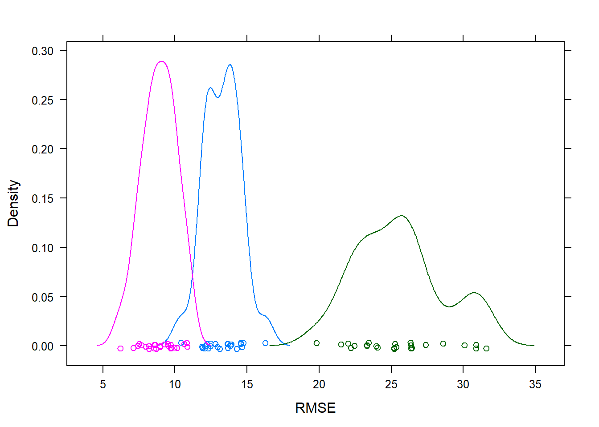
It seems that the model uncertainty for the outcome is fairly narrow for all models. We can (and in a real setting should) do further explorations to decide which model to choose. This is based part on what the model results are, and part on what we want. If we want a very simple, interpretable model, we’d likely use the linear model. If we want a model that has better performance, we might use MARS or - with the un-processed dataset - KNN.
For this exercise, let’s just pick one model. We’ll go with the best performing one, namely KNN (fit to non-pre-processed data). Let’s take a look at the residual plot.
#Write code to get model predictions for the outcome on the training data, and plot it as function of actual outcome values.
fitkr <- train(fracinf~., data=data_train,method="knn", trControl = fitControl)
fitkr## k-Nearest Neighbors
##
## 387 samples
## 18 predictor
##
## No pre-processing
## Resampling: Cross-Validated (5 fold, repeated 5 times)
## Summary of sample sizes: 311, 310, 309, 309, 309, 310, ...
## Resampling results across tuning parameters:
##
## k RMSE Rsquared MAE
## 5 8.636382 0.9108440 5.867500
## 7 9.264650 0.8973772 6.444174
## 9 9.848576 0.8845931 6.874218
##
## RMSE was used to select the optimal model using the smallest value.
## The final value used for the model was k = 5.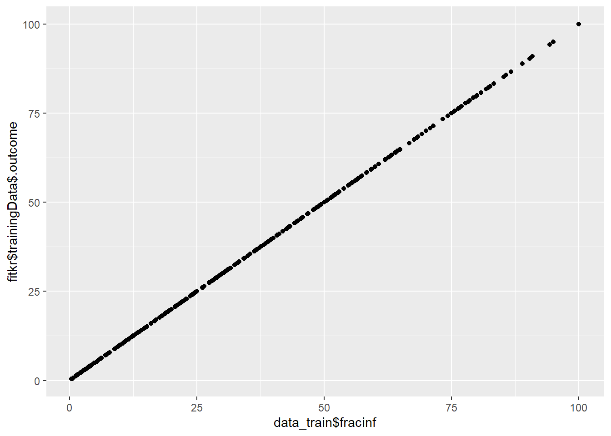
#dotplot(data_train$fracinf~fitkr$trainingData$.outcome)
#also compute residuals (the difference between prediction and actual outcome) and plot that
ggplot()+
geom_point(aes(y=resid(fitkr), x=data_train$fracinf))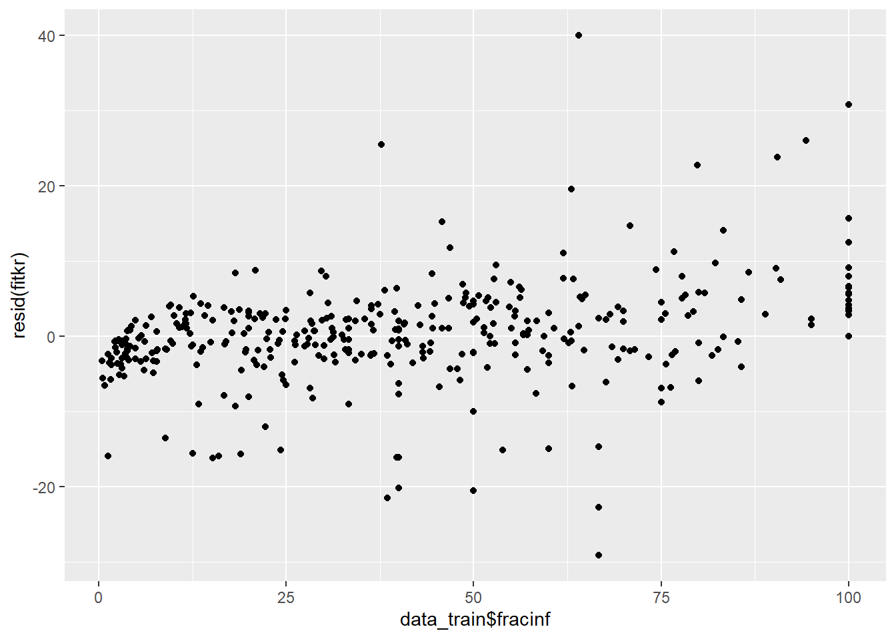
Both plots look ok, predicted vs. outcome is along the 45-degree line, and the residual plot shows no major pattern. Of course, for a real analysis, we would again want to dig a bit deeper. But we’ll leave it at this for now.
Let’s do a final check, evaluate the performance of our final model on the test set.
#Write code that computes model predictions and for test data, then compute SSR and RMSE.
fitkrfinal <- train(fracinf~., data=data_test,method="knn", trControl = fitControl)
fitkrfinal## k-Nearest Neighbors
##
## 164 samples
## 18 predictor
##
## No pre-processing
## Resampling: Cross-Validated (5 fold, repeated 5 times)
## Summary of sample sizes: 132, 132, 130, 130, 132, 131, ...
## Resampling results across tuning parameters:
##
## k RMSE Rsquared MAE
## 5 12.18793 0.8183846 8.597472
## 7 13.10077 0.7891862 9.249806
## 9 13.94623 0.7612377 10.011763
##
## RMSE was used to select the optimal model using the smallest value.
## The final value used for the model was k = 5.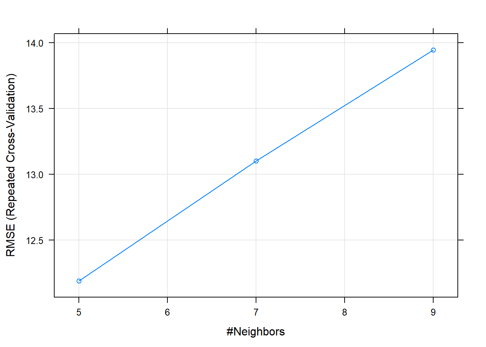
##SSR = sum (fitted regression points-mean)^2
testSSR<-sum((fitkrfinal$trainingData$.outcome-mean(fitkrfinal$trainingData$.outcome))^2)
##RMSE = stdev of the residuals
std.error(resid(fitkrfinal))## [1] 0.7180957##Found method on https://stackoverflow.com/questions/25691127/r-squared-on-test-data
#This is the closest to what I want. Gives the SSR values, and had the RMSE
## train
y_train <- data_train$fracinf
SSR_y_train <- sum((y_train-mean(y_train))^2)
cor(fitted(fitkr), y_train)^2## [1] 0.9441735## [1] 0.943778## [1] 0.9435972## test
pred_test <- predict(fitkrfinal, newdata = data_test)
y_test <- data_test$fracinf
SSR_y_test <- sum((y_test-mean(y_test))^2)
cor(pred_test, y_test)^2## [1] 0.8956702## [1] 0.8949805## [1] 0.9925051## [1] 0.9819598##Found this method on https://cran.r-project.org/web/packages/ssr/vignettes/ssr-package-vignette.html
#Not really what I want, but interesting.
# Define list of regressors.
regressors <- list(knn=caret::knnreg)
# Fit the model.
model <- ssr("fracinf ~ .", data_train, data_test, regressors = regressors, testdata = data_test)## [1] "Initial RMSE on testdata: 11.0539"
## [1] "Iteration 1 (testdata) RMSE: 10.8952 Improvement: 1.44%"
## [1] "Iteration 2 (testdata) RMSE: 10.9286 Improvement: 1.13%"
## [1] "Iteration 3 (testdata) RMSE: 11.0834 Improvement: -0.27%"
## [1] "Iteration 4 (testdata) RMSE: 11.0905 Improvement: -0.33%"
## [1] "Iteration 5 (testdata) RMSE: 11.0801 Improvement: -0.24%"
## [1] "Iteration 6 (testdata) RMSE: 11.0659 Improvement: -0.11%"
## [1] "Iteration 7 (testdata) RMSE: 11.0574 Improvement: -0.03%"
## [1] "Iteration 8 (testdata) RMSE: 11.0397 Improvement: 0.13%"
## [1] "Iteration 9 (testdata) RMSE: 11.0016 Improvement: 0.47%"
## [1] "Iteration 10 (testdata) RMSE: 11.0052 Improvement: 0.44%"
## [1] "Iteration 11 (testdata) RMSE: 10.9919 Improvement: 0.56%"
## [1] "Iteration 12 (testdata) RMSE: 10.9882 Improvement: 0.59%"
## [1] "Iteration 13 (testdata) RMSE: 10.9307 Improvement: 1.11%"
## [1] "Iteration 14 (testdata) RMSE: 10.9279 Improvement: 1.14%"
## [1] "Iteration 15 (testdata) RMSE: 10.9363 Improvement: 1.06%"
## [1] "Iteration 16 (testdata) RMSE: 10.9617 Improvement: 0.83%"
## [1] "Iteration 17 (testdata) RMSE: 10.9594 Improvement: 0.85%"
## [1] "Iteration 18 (testdata) RMSE: 10.9625 Improvement: 0.83%"
## [1] "Iteration 19 (testdata) RMSE: 10.9644 Improvement: 0.81%"
## [1] "Iteration 20 (testdata) RMSE: 10.9554 Improvement: 0.89%"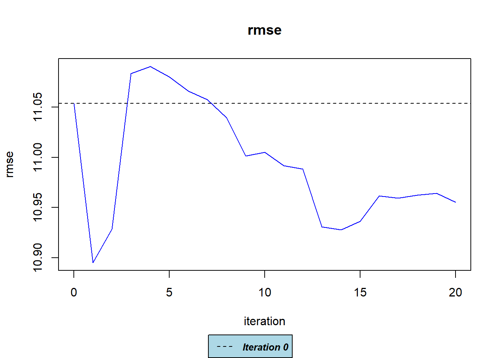
Since we have a different number of observations, the result isn’t expected to be quite the same as for the training data (despite dividing by sample size to account for that). But it’s fairly close, and surprisingly not actually worse. So the KNN model seems to be reasonable at predicting. Now if its performance is ‘good enough’ is a scientific question.
We will leave it at this, for now, we will likely (re)visit some other topics soon as we perform more such analysis exercises in upcoming weeks. But you are welcome to keep exploring this dataset and try some of the other bits and pieces we covered.